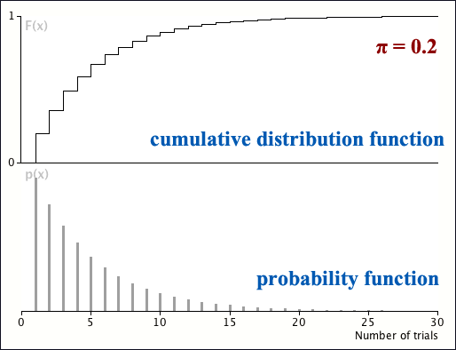

Cumulative distribution function
The cumulative distribution function for the geometric distribution with probability function
\[ p(x) = \pi (1-\pi)^{x-1} \quad \quad \text{for } x = 1, 2, \dots \]is
\[ F(x) = \begin{cases} 1 - (1-\pi)^{\lfloor x \rfloor} & \text{for } x \ge 0 \\ 0 & \text{for } x \lt 0 \end{cases} \]where \(\lfloor x \rfloor\) denotes the largest integer less than or equal to \(x\).
(Proved in full version)
An example is shown below.
